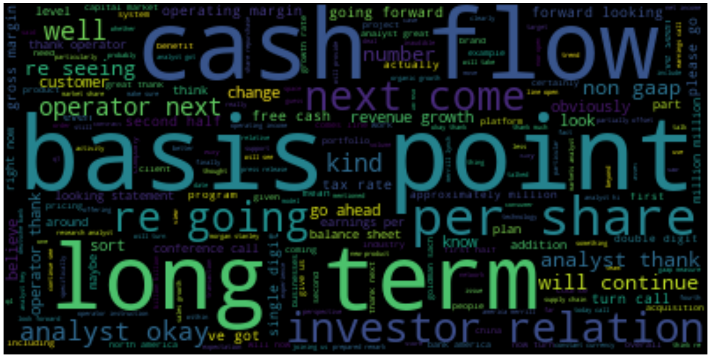
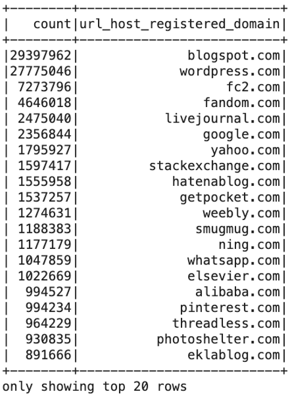
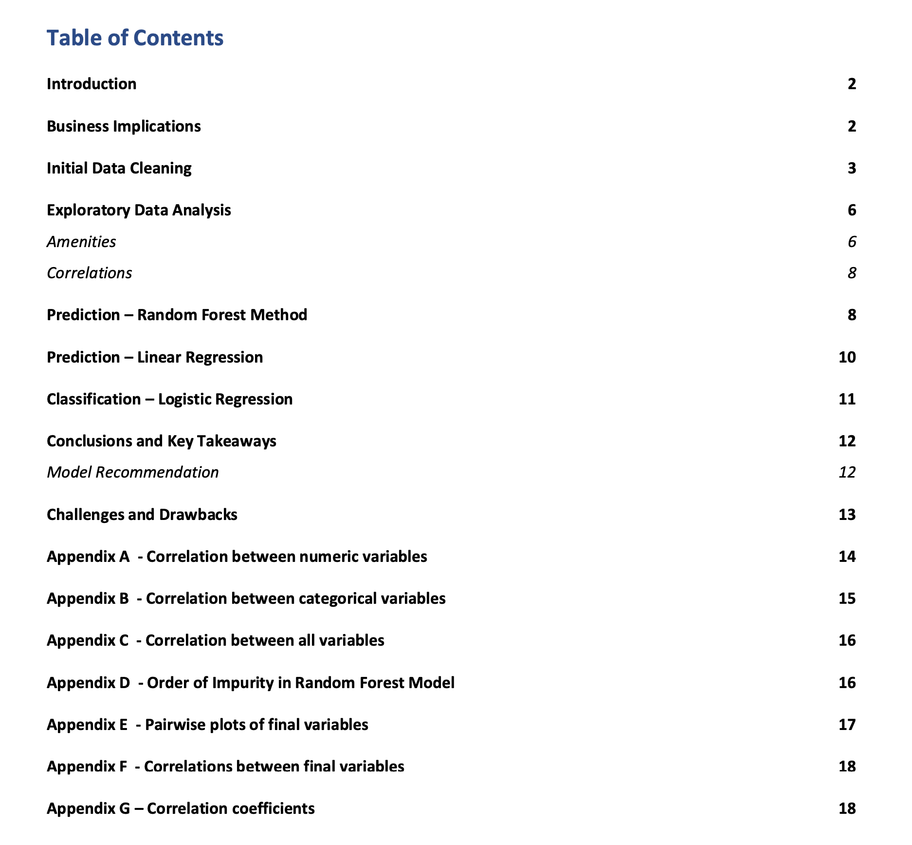

A link to a graduate school project on using natural language processing below:
Predicting Stock Price Using Natural Language Processing on Medium
Project Where I Queried the One of the Largest Datasets in the World: Measuring Internet Links: Accessing the Common Crawl Dataset Using EMR and Pyspark in AWS on Medium


Video Where I Explain How We Queried the Common Crawl:
VIDEO: Common Crawl Data Access Using PySparkOther Data Science Projects
Using Data Science to Analyze Airbnb Listings in R
Click to download the report
Neural Network to Predict Bike Sharing in Python
Predicting the Score of Super Bowl 54 Using Ensemble Modeling in Python
Web Analytics with Comscore Data: Clustering 90 Million Rows in R
Data Analysis Projects
Data Management, Graphics, and Statistics: Trending YouTube Videos in RYelp vs Google Reviews: Data Compared in Excel
Data Engineer Projects
Common Crawl: Internet Link MeasurementREST API Reference
Analytics Framework